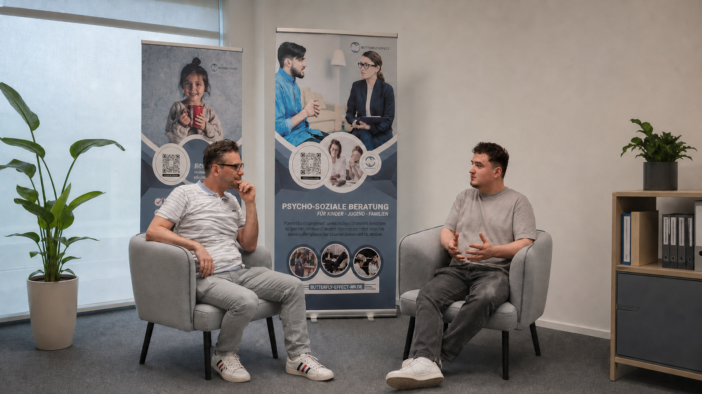

Kontakt
Termin anfragen.
Kinder · Jugend · Familie
Vertraulich, kultursensibel und auf Deutsch oder Türkisch.

Ein offenes Ohr
Wir begleiten Menschen respektvoll und stärken eigene Lösungen.
Unsere Angebote
Wählen Sie das Thema, das gerade zu Ihrer Situation passt.
Eigene Stärken erkennen, Sicherheit gewinnen und nächste Schritte entwickeln.
Orientierung für Eltern und Bezugspersonen im familiären Alltag.
Kommunikation verbessern, Konflikte verstehen und gemeinsame Lösungen finden.
Stabilität zurückgewinnen und passende Unterstützung für akute Situationen finden.
Kultur, Migrationserfahrung, Sprache und persönliche Werte respektvoll einbeziehen.
Geeignete soziale, pädagogische oder medizinische Angebote leichter erreichen.
So läuft es ab
Gemeinsam klären wir, was Sie brauchen und welcher Weg zu Ihnen passt.
Termin anfragen.
Anliegen besprechen.
Lösungen entwickeln.
Neue Stärke nutzen.
Das Angebot ersetzt keine psychiatrische oder medizinische Notfallversorgung. In akuten Gefahrenlagen sind Rettungsdienst oder zuständige Notfallstellen zu kontaktieren.